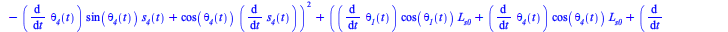
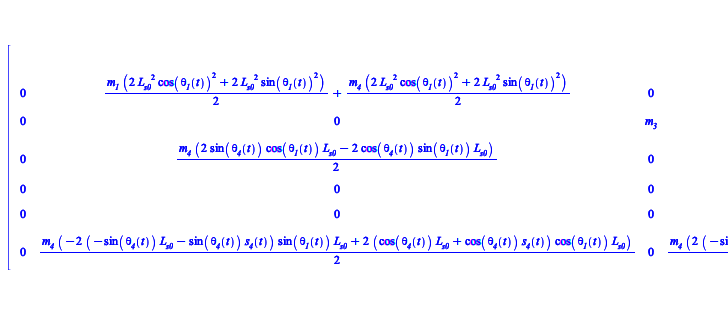

Lagrangian Equations
Kinetic and potential energy for mass m4
| > | KE4 := simplify( kineticEnergy(m__4,G4,Rs__4, 0,0,0,0,0,0) );
PE4 := gravitationalEnergy(m__4,G4,gravity); |
![rtable(1 .. 3, 1 .. 3, [[0, 0, 0], [0, 0, 0], [0, 0, 0]], subtype = Matrix);](images/Homework2_StefanoTonini248413_396.gif) |
|
| (7.2.1) |
Lagrangian function
| > | LagrF :=KE1+KE2+KE3+KE4-PE1-PE2-PE3-PE4; |
 |
(7.2.2) |
| > | q_vars__opt := [s__2(t),theta__1(t),s__3(t),s__4(t),theta__2(t),theta__3(t),theta__4(t)]; |
| (7.2.3) |
| > | leqns__opt := lagrangeEquations(LagrF,Phi,q_vars__opt) |
| (7.2.4) |
| > | z_vars := [ op(q_vars__opt), lambda__1(t)]; |
| (7.2.5) |
| > | MM, ff := GenerateMatrix(convert(leqns__opt,list),diff(q_vars__opt,t,t)) |
 |
(7.2.6) |
Damper Cs4 Force
| > | fe__4(t) := -C__s4*diff(s__4(t),t); # damper force model
FE__4 := <fe__4(t),0,0>; |
| (7.2.7) |
| > | FE__4:=Rs__4.FE__4; |
| (7.2.8) |
| > | Q_genF__opt := generalisedForces(G2,FE__2,q_vars__opt)-generalisedForces(P2,FE__2,q_vars__opt)+generalisedForces(G3,FE__3,q_vars__opt)-generalisedForces(P3,FE__3,q_vars__opt)+generalisedForces(G4,FE__4,q_vars__opt)-generalisedForces(G3,FE__4,q_vars__opt); |
| (7.2.9) |
Full set of equations
| > | ode_sys__opt := leqns__opt-Q_genF__opt; |
| (7.2.10) |